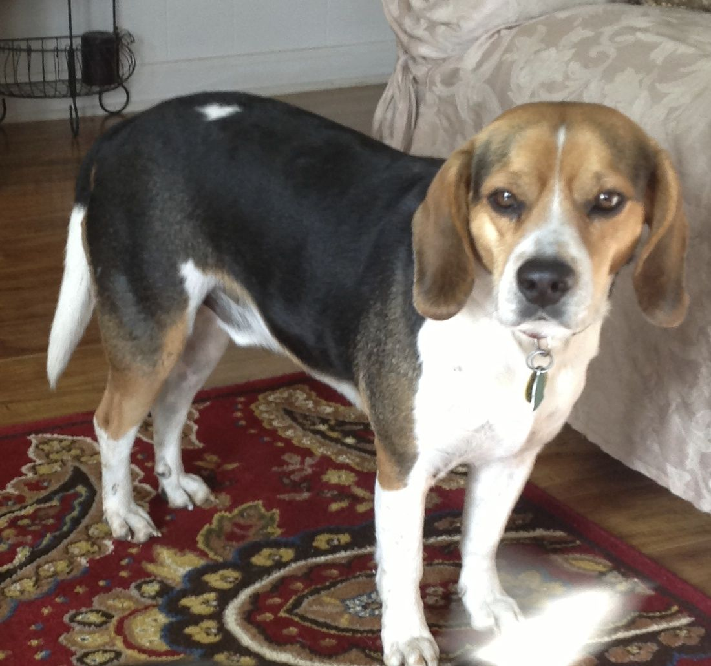

Frankie thinks he is the man of the house, but he is not. You can't tell him that! We have a love and hate relationship. He loves to growl when it's time to go to bed. He doesn't like to be bother when he is howling at the moon at night. In all I love ♡ him because I had him sense college. Nothing can seperate us.
